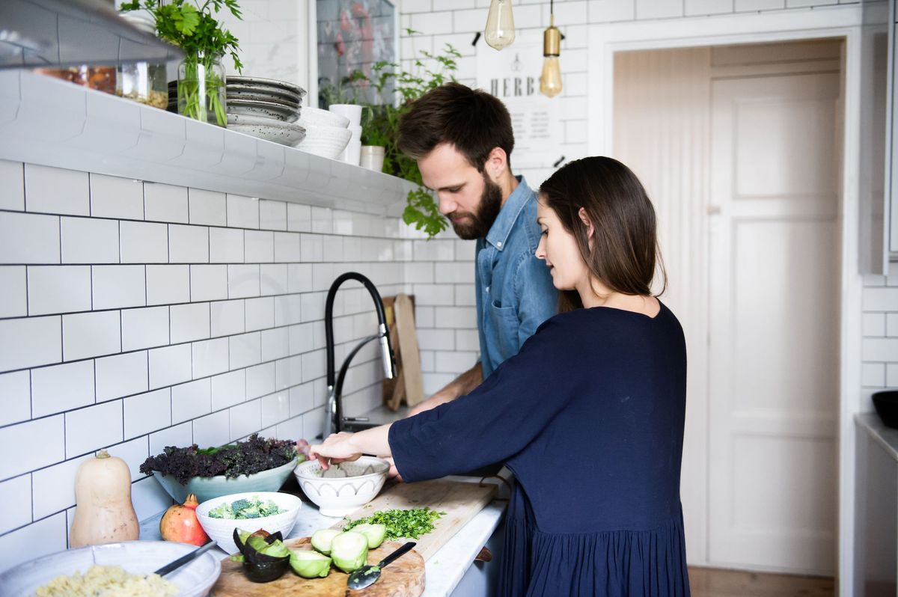

Zapraszamy do odkrywania naszych szybkich i zdrowych przepisów, które idealnie sprawdzą się w codziennej kuchni. Znajdziesz tu inspiracje na lekkie śniadania,
pożywne obiady i pyszne kolacje. Proste składniki, szybkie przygotowanie i gwarancja smaku to nasza recepta na sukces.

Kulinarne Podróże: Smaki Świata w Twojej Kuchni
Poznaj niezwykłe przepisy z różnych zakątków świata, które przeniosą Cię w kulinarną podróż bez wychodzenia z domu.
Od aromatycznych dań indyjskich, przez klasyczne włoskie makarony, po egzotyczne tajskie curry.
Każdy przepis to wyjątkowe doświadczenie smakowe, które zachwyci Twoich bliskich.